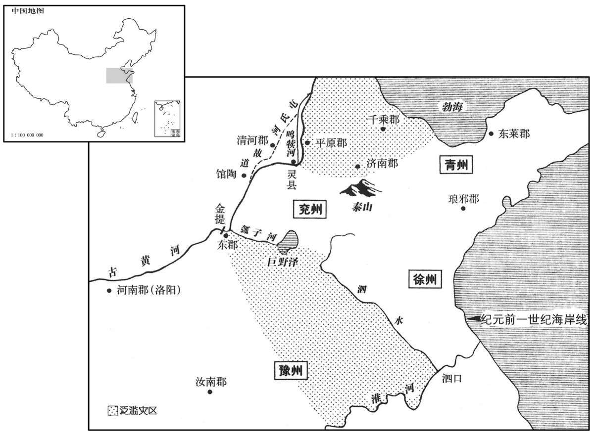
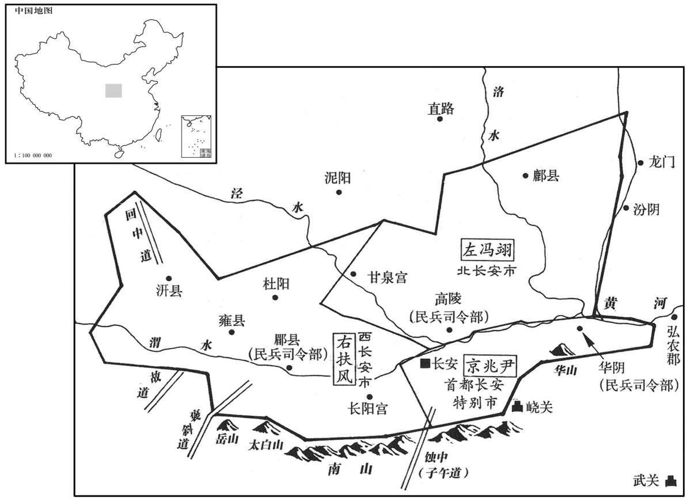

公元前29年资治通鉴：本年记事、原文与白话对照
按原书编年位置阅读；追叙和史论不等于本年发生的事件。白话采用所据译本，缺译不以生成译文补齐。
卷30 · 本年记事
公元前29年 · 汉孝元皇帝建始四年
四年〔（壬辰、前二九）〕
上传原文的注释括号有异常，字符原样保留；无法可靠划分的段落默认全文显示。
本年事件索引（现代整理）

本年形势与背景参考图

本年形势与背景参考图
春，正月，癸卯，陨石于亳四，陨于肥累二。〔汉书五行志：亳作「」。孟康曰：、肥累，皆县名，故属真定。师古曰：，音工老翻。累，音力追翻。〕
春季，正月，癸卯（二十六日），有四颗陨石在亳县坠落，有两颗陨石在肥累坠落。
罢中书宦官；初置尚书员五人。〔臣瓒曰：汉初，中人有中谒者令；孝武加中谒者令为中书谒者令，置仆射。宣帝时，任中书官弘恭为令，石显为仆射。元帝即位数年，恭死，显代为中书令，专权用事；至帝，乃罢其官。师古曰：汉旧仪云：尚书四人，为四曹：常侍尚书，主丞相、御史事；二千石尚书，主刺史、二千石事；户曹尚书，主庶人上书事；主客尚书，主外国事。帝置五人，有三公曹，主断狱事。〕
撤销中书宦官。初次规定尚书定员为五人。
三月，甲申，以左将军乐昌侯王商为丞相。
三月，甲申（初八），任用左将军、乐昌侯王商为丞相。
夏，上悉召前所举直言之士，诣白虎殿对策。〔师古曰：此殿在未央宫。〕是时上委政王凤，议者多归咎焉。谷永知凤方见柄用，〔师古曰：柄用，言任用之，授以权也。〕阴欲自托，乃曰：「方今四夷宾服，皆为臣妾，北无荤粥、冒顿之患，〔荤，许云翻。师古曰：粥，音弋六翻。太史公曰：唐、虞以上有荤粥。孟子曰：太王事獯粥。冒顿为患，见高、惠、吕后纪。〕南无赵佗、吕嘉之难，〔赵佗，见高、惠、吕后、孝文纪。吕嘉，见孝武纪。难，乃旦翻。〕三垂晏然，靡有兵革之警。诸侯大者乃食数县，汉吏制其权柄，不得有为，无吴、楚、燕、梁之势。〔吴、楚、梁见孝景纪。燕，见孝昭纪。〕百官盘互，亲疏相错，〔师古曰：盘互，盘结而交互也。错，间杂也。〕骨肉大臣有申伯之忠，〔师古曰：申伯，周申后之父。余据诗崧高云：不显申伯，王之元舅，是则申伯乃宣王之舅，永正以之况王凤也。〕洞洞属属，〔师古曰：洞洞，敬肃也。属属，专谨也。洞，音动。属，音之欲翻。〕小心畏忌，无重合、安阳、博陆之乱。〔师古曰：重合侯，莽通；安阳侯，上官桀；博陆侯，霍禹也。余按莽通即马通，事见二十二卷武帝后元元年。安阳侯，事见二十三卷昭帝元凤元年。霍禹，事见二十五卷宣帝地节四年。〕三者无毛发之辜，窃恐陛下舍昭昭之白过，忽天地之明戒，听暗〔【章：十四行本「暗」作「晻」；乙十一行本同。】〕昧之瞽说，〔师古曰：舍谓留也。晻，与暗同，又音一感翻。瞽说，言不中道，若无目之人也。余谓舍，置也，读曰舍。〕归咎乎无辜，倚异乎政事，〔师古曰：倚，依也。〕重失天心，〔师古曰：重，音直用翻。〕不可之大者也。〔师古曰：此则为大不可也。〕陛下诚深察愚臣之言，抗湛溺之意，解偏驳之爱，〔师古曰：抗，举也。湛，读曰沈。驳，不周普也。湛，持林翻。〕奋干刚之威，平天覆之施，使列妾得人人更进，〔覆，敷又翻。施，式智翻。更，工衡翻。〕益纳宜子妇人，毋择好丑，毋避尝字，〔如淳曰：王凤上小妻弟以纳后宫，以尝字乳，王章言之，坐死。今永及此，为凤洗前过也。仲冯曰：按王章言事坐诛在阳朔初，而永此对乃是建始四年，则非为凤而言也。然观永前后之文，实若为凤。但班固于此对后，乃云，永为上第，擢为光禄大夫，则同是建始四年中事。余谓此时凤盖已纳张美人于后宫，故永为之言；若王章指言凤过，则在阳朔初也。〕毋论年齿。推法言之，陛下得继嗣于微贱之间，乃反为福；得继嗣而已，母非有贱也。〔师古曰：苟得子耳，勿论其母之贵贱。〕后宫女史、使令有直意者，〔郑玄曰：女史，女奴晓书者。使令，给役后宫，无爵秩者也。师古曰：直，当也。令，音力成翻。〕广求于微贱之间，以遇天所开右，〔师古曰：右，读曰佑。佑，助也。〕慰释皇太后之忧愠，〔师古曰：释，散也。愠，于问翻。〕解谢上帝之谴怒，则继嗣蕃滋，灾异讫息！」〔师古曰：蕃，多也。讫，止也。蕃，音扶元翻。〕杜钦亦仿此意。上皆以其书示后宫，擢永为光禄大夫。
夏季，皇上把前些时候被举荐的直言之士，都召集到白虎殿，进行考试，回答皇帝的策问。此时，成帝把国家大事都委托给王凤，直言之士在回答策问时，很多人将天变归咎于王凤。谷永知道王凤正受信用，掌握权柄，想暗中投靠，于是上书说：“而今四方外族都已降服，均成为汉朝的臣属。北方没有匈奴荤粥、冒顿那样的祸害，南方也没有赵佗、吕嘉的发难，三边晏然，没有战争的警报。大的诸侯国食邑不过数县，由朝廷委派的官吏控制那里的权柄，使诸侯王不能有所作为，不会形成当年吴、楚、燕、梁等诸侯国尾大不掉的局势。文武百官互相交结制衡，与皇帝有亲戚关系的官员与没有亲戚关系的官员互相掺杂。皇亲国戚中有象申伯那样的忠臣，他们恭敬谨慎、小心翼翼，没崐有重合侯莽通、安阳侯上官桀、博陆侯霍禹那样的阴谋。以上三种人都没有丝毫的罪行，我担心陛下放过明显的错误，忽略天地的明显警告，听信愚昧盲目之言，归罪于无辜，把政事托附给不可靠的人，那将大失上天之心，是太不应该了。陛下如果能深思我的建议，抗拒沉溺之心，解除专宠之爱，振奋起阳刚之威，将天子之恩平均施布，使后宫各位嫔妃得以人人轮流侍奉君王。增添选纳能生男孩的妇人，不挑剔美丑，不在意曾否嫁过人，也不论年龄。照古法推算来说，陛下若能使身份微贱的人生下皇嗣，则反而为福。目的只是要得到皇位继承人，勿论其母的贵贱。后宫女史、使令中若有皇上中意的女子，也可选纳，广泛地求嗣于微贱者之中，遇上天保佑，生下皇子，皇太后的忧虑和烦恼，因得到安慰而解除，上帝的谴责和愤怒也会平息化解，后代繁衍，灾异自然消除。”杜钦也仿效谷永的意思上书。成帝把他们两人的奏书都拿给后宫看，擢升谷永为光禄大夫。
夏，四月，雨雪。〔雨，于具翻。〕
夏季，四月，降雪。
秋，桃、李实。
秋季，桃树、李树结果。
大雨水十余日，河决东郡金堤。〔师古曰：金堤者，河堤之名，今在滑州界。〕先是清河都尉冯逡奏言：「郡承河下流，〔据沟洫志：逡言清河郡承河下流，与兖州，东郡分水为界。先，悉荐翻。逡，七伦翻。〕土壤轻脆易伤，〔易，以豉翻。〕顷所以阔无大害者，以屯氏河通两川分流也。〔师古曰：阔，稀也。〕今屯氏河塞灵鸣犊口，又益不利，〔屯氏呵塞，见上卷元帝永光五年。塞，悉则翻。〕独一川兼受数河之任，虽高增堤防，终不能泄。如有霖两，旨日不霁，必盈溢。〔师古曰：雨止曰霁，音子诣翻，又音才诣翻。〕九河故，今既灭难明，〔夏禹疏九河。子安国曰：河水分九道，在兖州界。尔雅曰：徒骇一，太史二，马颊三，覆釜四，故苏五，简六，洁七，钩盘八，鬲津九。〕屯氏河新绝未久，其处易浚；〔师古曰：浚，谓治导之，令其深也。浚，音峻。〕又其口所居高，于以分杀水力，道里便宜，〔杀，音所介翻，减也。〕可复浚以助大河，〔复扶又翻。〕泄暴水，备非常。不豫修治，〔治，直之翻。〕北决病四、五郡，南决病十余郡，然后忧之，晚矣！」事下丞相、御史，白遣博士许商行视，〔下，遐稼翻。师古曰：白，白于天子也。行，音下更翻。〕以为「方用度不足，〔师古曰：言国家少财役也。〕可且勿浚。」后三岁，河果决于馆陶及东郡金堤，泛滥兖、豫及〔【章：乙十一行本「及」作」入」；孔子同。】〕平原、千乘、济南，〔乘，绳证翻。济，子礼翻。〕凡灌四郡、三十二县，水居地十五万余顷，深者三丈；坏败官亭、室庐且四万所。〔坏，音怪。败，补迈翻。〕
大雨连下十余日，黄河在东郡金堤决口。在此之前，清河郡都尉冯逡奏报说：“清河郡位于黄河下游，土壤松脆，容易崩塌。暂时没有发生大灾害，是由于屯氏河通畅，可以两河分流。如今屯氏河已经淤塞，灵鸣犊口也越来越不通畅，只有一条河，却要兼容数条河流的水量，虽然加高堤防，最终却无法使它顺畅宣泄，若有大雨，十日不停，河水必然满盈泛滥。夏禹时代的九河故道，如今既已湮没难寻，而屯氏河刚刚淤塞不久，容易疏通。再有，黄河与屯氏河分流的叉口处地势较高，实施分减水力的工程，施工起来也方便。可重新疏通屯氏河，以帮助黄河宣泄洪水，防备非常情况的发生。如果不预先修治，黄河一旦在北岸决口，将危害四、五郡；在南岸决口，将危害十余郡。事后再忧虑，就晚了！”成帝将冯逡的奏章交给丞相和御史去处理，他们奏请派遣博士许商去巡视那一地区。根据许商视察的结果，他们认为：“现在国家经费不足，可暂且不疏通。”三年后，黄河果然在馆陶及东郡金堤决口，洪水泛滥兖州、豫州以及平原郡、千乘郡、济南郡，共淹了四郡三十二县，十五万余顷土地变为泽国，水深的地方达三丈。冲毁官署驿站及民间房舍近四万所。
冬，十一月，御史大夫尹忠以对方略疏阔，上切责其不忧职，自杀。遣大司农非调〔师古曰：大司农名非调也。姓谱：非，姓也，秦非子之后。〕调均钱谷河决所灌之郡，〔师古曰：令其调发均平钱谷遭水之郡，使存给也。调，音徒钓翻。〕谒者二人发河南以东船五百鸹，〔师古曰：一船为一鸹，音先劳翻；其字从木。〕徙民避水，居丘陵，九万七千余口。
冬季，十一月，由于御史大夫尹忠的救灾方案疏漏而不切实际，成帝严厉斥责他不尽心职守，尹忠自杀。成帝派大司农非调调拨均平钱谷救济受淹各郡，又派两名谒者向河南以东地区征调船舶五百艘，从洪灌区中抢救灾民九万七千余人，把他们迁移到丘陵高地。
壬戌，以少府张忠为御史大夫。
壬戌（二十日），任命少府张忠为御史大夫。
南山群盗傰宗等数百人为吏民害。〔苏林曰：傰，音朋；晋灼曰：音倍。师古曰：晋音是也。〕诏发兵千人逐捕，岁余不能禽。或说大将军凤，〔说，输芮翻。〕以「贼数百人在毂下，〔师古曰：在天子辇毂之下，明其逼近也。〕讨不能得，难以示四夷；独选贤京兆尹乃可。」于是凤荐故高陵令王尊，征为谏大夫，守京辅都尉，〔武帝元鼎四年，更置三辅都尉：京兆曰京辅都尉，冯翊曰左辅尉，扶风曰右辅都尉。〕行京兆尹事。旬月间，盗贼清；后拜为京兆尹。
南山一带盗匪宗等数百人在地方作乱，使官吏百姓受害。成帝诏令发兵一千人剿捕，费时一年多，仍不能擒灭。有人向大将军王凤建议说：“盗匪数百人在天子脚下作乱，而讨伐不能奏效，难以向四边蛮族显示汉朝之威。崐只有选任贤明能干的京兆尹才行。”于是王凤推荐前高陵令王尊，征召入京任命为谏大夫，署理京辅都尉，代行京兆尹的职责。他上任不到一个月，盗匪肃清。而后正式擢升王尊为京兆尹。
立即位之初，丞相匡衡复奏：「射声校尉陈汤〔武帝置北军八校尉，射声其一也，秩二千石，掌待诏射声士。服虔曰：工射者也；冥冥中闻声则中之，因以名也。复，扶又翻。〕以吏二千石奉使，〔汤为西域副校尉，秩比二千石。〕颛命蛮夷中，不正身以先下，〔先，悉荐翻。〕而盗所收康居财物，戒官属曰：『绝域事不覆校。』〔言外域之事，汉朝务存宽大，必不考覆也。〕虽在赦前，〔言其事在竟宁元年七月，赦前也。〕不宜处位。」〔处，昌吕翻。〕汤�之K。
成帝即位初期，丞相匡衡再次上奏说：“射声校尉陈汤，以二千石官员的身份出使西域，专门负责西域蛮夷事务，他不能持身以正，做部下的表率，反而盗取所没收的康居王国财物，并告诫下属官员说：‘远在外域发生的事，不会核察追究。’此事虽发生在大赦之前，但他已不适宜再担任官职。”陈汤获罪被免官。
后汤上言：「康居王侍子，非王子。」按验，实王子也。汤下狱当死。〔下，遐稼翻。〕太中大夫谷永〔按是年夏，谷永方擢为光禄大夫。河平二年，议受伊邪莫演降，永犹为光禄大夫。此书太中大夫谷永，据陈汤传也。〕上疏讼汤曰：「臣闻楚有子玉得臣，文公为之仄席而坐；〔师古曰：子玉，楚大夫也；得臣，其名也。春秋僖十八年，子玉帅师与晋文公战于城濮，楚师败绩，晋师三日馆谷，而文公犹有忧色，曰：「得臣犹在，忧未歇也！」及楚杀子玉，公喜而后可知也。礼记曰：有忧者仄席而坐，盖自贬也。为，于伪翻。仄，古侧字。〕赵有廉颇、马服，强秦不敢窥兵井陉；〔师古曰：廉颇，赵将也。马服君赵奢，亦赵将也。井陉之口，赵之西界山险道也。陉，音刑。〕近汉有郅都、魏尚，匈奴不敢南乡沙幕。〔景帝以郅都为鴈门太守，匈奴素闻都节，举边为引兵去，竟都死不敢近鴈门。魏尚事见十五卷文帝十四年。乡，曰向。〕由是言之，战克之将，国之爪牙，不可不重也。盖君子闻鼓鼙之声，则思将帅之臣。〔师古曰：礼之乐记曰：鼓鼙之声讙，讙以立动，动以进众；君子听鼓鼙之声则思将帅之臣。鼙，骈迷翻。将，即亮翻。帅，所类翻。〕窃见关内侯陈汤，前斩郅古，威震百蛮，武畅西海，汉元以来，征伐方外之将，未尝有也！〔汉元，谓汉初也。〕今汤坐言事非是，幽囚久系，历时不决，执宪之吏欲致之大辟。〔辟，毗亦翻。〕昔白起为秦将，南拔郢都，北坑赵括，以纤介之过，赐死杜邮；秦民怜之，莫不陨涕。〔事见周赧王纪。〕今汤亲秉钺，席卷、喋血万里之外，〔师古曰：如席之卷，言其疾也。服虔曰：喋，音蹀，屣履之蹀。如淳曰：杀人流血滂沱为喋血。师古曰:喋，音大颊翻，本字当作「蹀」。蹀，谓履涉之耳。〕荐功祖庙，告类上帝，〔张晏曰：谓以所征之国事类告天也。〕介冑之士靡不慕义。以言事为罪，无赫赫之恶。周书曰：『记人之功，忘人过，宜为君者也。』〔师古曰：尚书之外间书也。〕夫犬马有劳于人，尚加帷盖之报，〔师古曰：礼记称孔子云：敝帷弗弃，为埋马也；敝盖弗弃，为埋狗也。〕况国之功臣者哉！窃恐陛下忽于鼙鼓之声，不察周书之意，而忘帷盖之施，〔施，式智翻。〕庸臣遇汤，卒从吏议，〔师古曰：以待庸臣者待汤也。卒，犹终也。卒，子恤翻。〕使百姓介然有秦民之恨，〔师古曰：介然，犹耿耿。〕非所以厉死难之臣也！」〔难，乃旦翻。〕书奏，天子出汤，夺爵为士伍。
后来，陈汤上书说：“康居王送来当人质的王子，并不是真王子。”然而经过查验，确实是真王子。陈汤被捕入狱，依罪应被处死。太中大夫谷永上书为陈汤辩护说：“我听说楚国因为有子玉、得臣，晋文公因此 坐不安席；赵国有廉颇和马服君赵奢，强大的秦国便不敢进犯井陉；近代汉朝有郅都、魏尚，匈奴则不敢从沙漠南下。因此可说，能征善战、克敌制胜的将领，是国家的爪牙，不可以不重视他们。这正是：君子听到战鼓之声，则思念将帅之臣。我看关内侯陈汤，从前击斩郅支单于，威震蛮夷各国，所向披靡，一直打到西海。自汉朝开国以来，在疆域之外作战的将领，还从未有过这样的战功！如今，陈汤因报告失实而获罪，长期囚禁监狱，历时这么久仍不能结案，执掌刑法的官吏意欲致他死罪。从前，白起为秦国的大将，南伐楚，攻陷郢都；北击赵国，坑杀赵括降卒四十万，却因极微小的过失，在杜邮被赐死。秦国百姓怜惜他，无不流涕。而今陈汤亲执武器，席卷匈奴，喋血于万里之外。把战功呈献在皇家祖庙，向上帝禀告，天下武士无不思慕。他不过因为说错话而获罪，并不是什么严重的罪恶。《周书》说：‘记人之功，忘人之过，这才适合当人君。’犬马对人有劳苦之功，死后尚且要用车帷伞盖将它们好好埋葬，作为回报，何况是国家的功臣呢！我恐怕陛下忽略了战鼓的声者，不领会《周书》的深意，忘记报答功臣的效劳，象对待平庸臣子那样对待陈汤，终于听从掌刑官吏的建议，将他处死，使百姓心中耿耿，有秦民那样的遗恨。这不是勉励大臣为国赴难效死的作法！”奏章上去后，天子下令释放陈汤，但剥夺爵位，贬为士伍。
会西域都护段会宗为乌孙兵所围，驿骑上书，愿发城郭、敦煌兵以自救；〔城郭，谓西域城郭诸国也。敦，音屯，徒门翻。〕丞相商、大将军凤及百僚议数日不决。凤言：「陈汤多筹策，习外国事，可问。」上召汤见宣室。汤击郅支时中寒，〔见，贤遍翻。中，竹仲翻。〕病两臂不屈申；汤入见，有诏毋拜，示以会宗奏。汤对曰：「臣以为此必无可忧也。」上曰：「何以言之﹖」汤曰：「夫胡兵五而当汉兵一，何者﹖兵刃朴钝，弓弩不利。今闻颇得汉巧，然犹三而当一。又兵法曰：『客倍而主人半，然后敌。』〔此言凭城而守者，主人之半可以敌客之倍。〕今围会宗者人众不足以胜会宗，唯陛下勿忧！且兵轻行五十里，重行三十里，今会宗欲发城郭、敦煌，历时乃至，所谓报雠之兵，非救急之用也。」上曰：「柰何﹖其解可必乎﹖度何时解﹖」〔度，徒洛翻。〕汤知乌孙瓦合，不能久攻，〔师古曰：谓如碎瓦之杂居，不齐同。〕故事不过数日，师古曰：故事，谓以旧事测之。〕因对曰：「已解矣！」屈指计其日，曰：「不出五日，当有吉语闻。」〔师古曰：吉，善也。善，谓兵解之事。〕居四日，军书到，言已解。大将军凤奏以为从事中郎，莫府事壹决于汤。〔续汉志：大将军府有从事中郎二人，秩六百石，职参谋议。〕
正好，西域都护段会宗被乌孙王国的军队围困，段会宗用驿马上书，请求成帝征发西域诸国军队，以及汉朝在敦煌的军队救援。丞相王商、大将军王凤崐以及百官会议数天也作不出决定。王凤说：“陈汤富于谋略，又熟悉外国的情况，可以询问他。”成帝在宣室殿召见陈汤。陈汤在进攻郅支单于时，中了风寒，两臂不能屈伸，入见时，成帝下诏准许他不必跪拜，把段会宗的奏书拿给他看。陈汤回答说：“我认为这件事一定没什么可忧虑的。”成帝说：“你为什么这样讲？”陈汤说：“五个胡兵才能抵挡一名汉兵，为什么呢？因为他们的刀剑不锋利，弓弩也不强。最近听说颇学得一些汉人制作兵器的技巧，然而仍是三个胡兵抵挡一个汉兵。再说，《兵法》上说：‘客兵必须是守军人数的两倍，才能对敌。’现在围困段会宗的敌兵人数不足以战胜他，请陛下不必忧虑！况且军队轻装日行五十里，重装备则日行三十里。现在段会宗打算征发西域诸国和敦煌的军队，部队行军需较长时间才能赶到，这成了所谓报仇之军，而不是救急之兵了。”成帝说：“那怎么办呢？围困一定可以解除吗？你估计什么时候可以解围？”陈汤知道乌孙之兵，不过是乌合之众，不能久攻，以经验推测，不过数日。因此回答说：“现在已经解围了！”又屈指计算日期，然后说：“不出五日，就会听到好消息。”过了四天，军书到，声称已经解围。大将军王凤上奏，要求任命陈汤为从事中郎。从此大将军幕府的大事，均由陈汤一人决定。